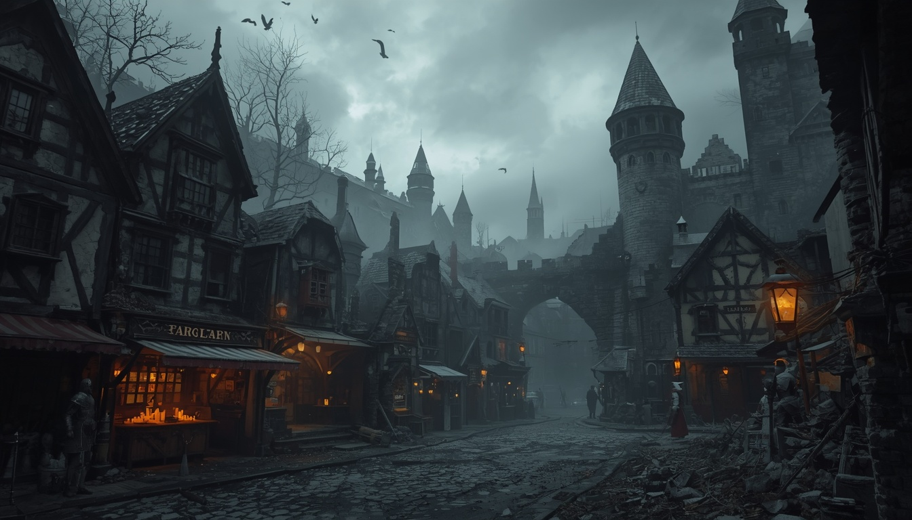
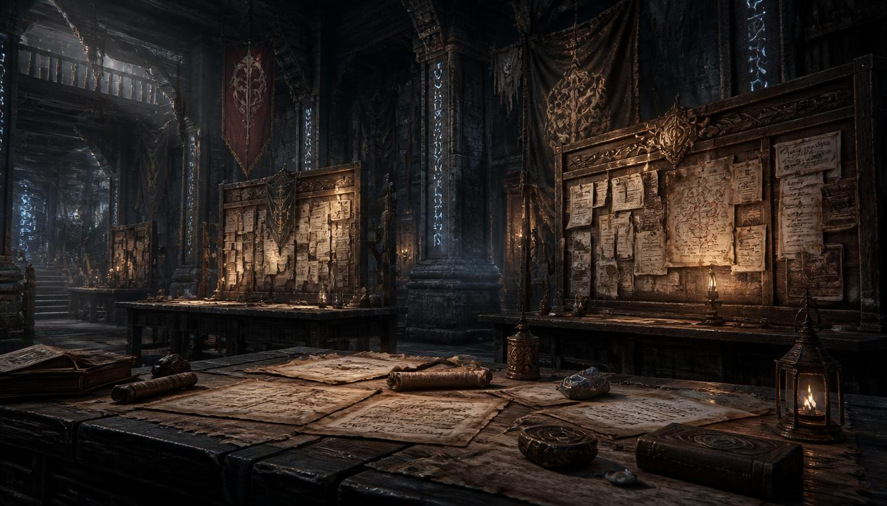
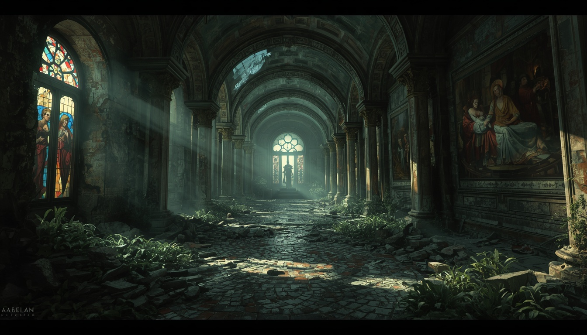
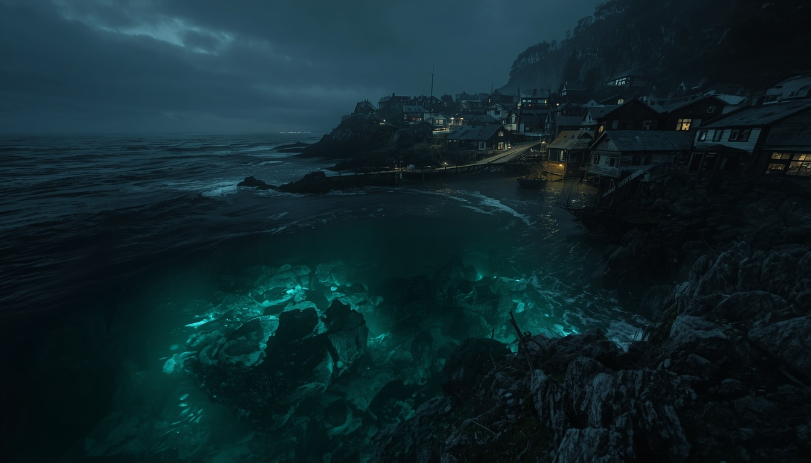
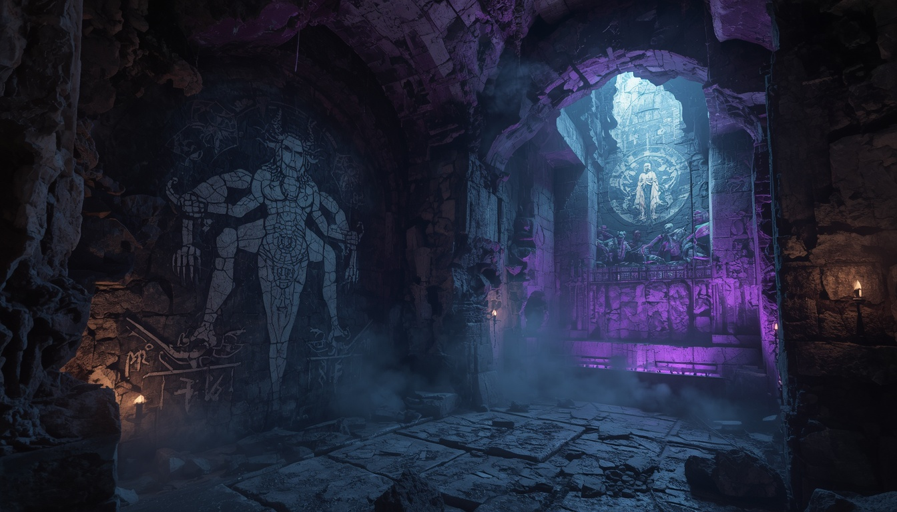
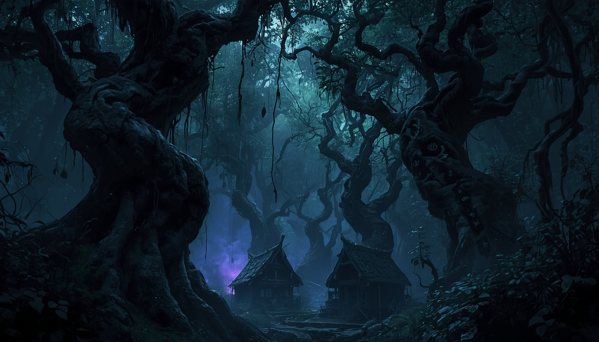
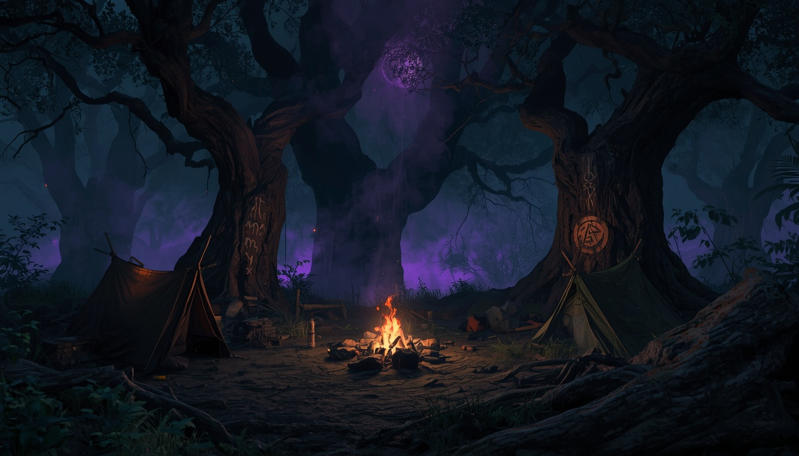

Chapter I
World
世界観
世界の成り立ち
世界が誕生した太古、この大地は「外なる神々（The Outer Presences）」と呼ばれる存在たちによって観測されていた。彼らは宇宙の深淵に棲む存在であり、善悪の概念を超えた純粋な「力の塊」である。古代の神学者たちはこれらを大きく三つに分類した。
The Sutured Ones
縫合の神秩序と構造を司る者たち。神聖魔術の源泉であり、聖職者はその加護のもとに奇跡を行使する。人の形をしているとも、巨大な幾何学的構造体であるとも伝えられるが、直接姿を見た者はいない。
The Abyssal Choir
深淵の神混沌と変質を司る者たち。魔術師が扱う「魔力」は、深淵の神が宇宙に漏らす思念が結晶化したものだという説がある。理性を持って近づけば力となり、無防備に触れれば発狂を招く。
The Nameless Throng
名無しの者深きものをはじめとする、人類と異質な血を持つ生命体たちを統べる存在。その実態は最も不明瞭であり、海の底、土の中、夢の深部に潜んでいるとされる。「深きものの末裔」はこの名無しの者の意志を血に宿している。
セラフィット帝国と大崩壊
約300年前
セラフィット帝国の全盛期
縫合の神の加護のもとで神聖魔術を発展させ、外なる神々の研究も並行して行った。帝都アルカーナには世界最大の神学図書館が建立され、禁断とされた呪文書までもが「学術的目的」のもとに収集・分類された。
約250年前
大崩壊（The Unravelling）
突如として帝国各地で「境界の侵食」が始まった。物理的な壁が意味をなさなくなり、人の理性と狂気の境が融解し、死者が動き出し、海から名状しがたい形をした何かが這い上がった。帝国は三年で滅んだ。
大崩壊から3年後
帝都アルカーナの消滅
帝都は深霧の底に沈み、地図から消えた都市として語り継がれている。最後の帝国皇帝エドガー四世の消息は不明のままだ。
現在
廃帝国の後継地帯
各地に小規模な都市国家・集落が点在し、人々はなんとか文明の火を繋いでいる。大崩壊の後遺症は今も続いており、霧・怪異・正気を失う者の数は戦争や飢饉による死者に匹敵するとも言われる。
「太陽が絶えなかった時代があった。そう、確かにあったのだ。今となっては誰も信じまい」
——廃人の独白、断片的な日記より現在の世界
大崩壊から二百五十年。世界は「完全には滅んでいない」。
各地に小規模な都市国家・集落が点在し、人々はなんとか文明の火を繋いでいる。しかしセラフィット帝国の偉業を再現できる者はおらず、失われた技術・魔術・奇跡の断片を求めて廃墟を漁る者たちが後を絶たない。彼らを「廃掘人（ルーカー）」と呼ぶ。
廃掘人（ルーカー）とは
失われた帝国の知識・魔術・秘宝を求めて廃墟に踏み込む者たちの総称。動機は様々だ——金、知識、失った何かの痕跡、あるいは「動いていれば死について考えずに済む」という逃避。この世界を「前進させる」のはほとんどの場合この種の人々だ。
大崩壊の後遺症
夜になると霧が深まり、廃墟には怪異が集い、海の近くでは奇妙な夢を見る者が増えている。正気を失った者の数は、戦争や飢饉による死者に匹敵するとも言われる。この世界で生まれた者にとって、廃墟は「廃墟」ではなく「風景」であり、霧は「異常」ではなく「季節の一つ」だ。
主要地域 — アルゴス大陸
各地域名をクリックすると詳細が展開します。


概要
もともとは帝国の商業都市群だったが、大崩壊後に生き残った商人・傭兵・市民が独自の自治体制を築いた。政治体制は各都市が独自の法を持つ「緩やかな連合」であり、軍事的な中央集権はない。帝国時代の文化・技術が一部継承されており、識字率は他地域に比べて高い。
三つの主要都市
最大の商業都市「カーニヴァル」、港湾都市「ブリッジ・ポート」（深きものの末裔の人口比率が高い）、傭兵ギルド本部がある要塞都市「ソルタフォート」。三都市の利害対立は常にあり、全会一致が原則の評議会では重要な決定がほとんど下せない。
——カーニヴァルの市場での格言


概要
外なる神々の研究を徹底的に禁じており、魔術師・呪術師への迫害が激しい。一方で医療・農業・建築技術は大陸随一であり、難民を積極的に受け入れることでも知られる。聖職者のほとんどはここの出身か、白衣教団で修練を積んだ者である。
白衣教団の三派閥
教団は一枚岩ではなく「浄化派」「縫合派」「観察派」の三派閥が存在する。最も政治的権力を持つ浄化派は魔術師・呪術師への迫害を推進。穏健な縫合派は医療・農業の実績を担う。外部にほぼ知られていない観察派は、外なる神々の研究を「理解のために制限しながら行う」立場をとる。
——廃掘人の手記より


概要
廃墟には失われた帝国の知識・魔術書・秘宝が眠り、廃掘人たちが命がけで挑む「聖地」となっている。霧の内部に入った者の証言に共通する点として「方角がわからなくなる」「建物の内部は保存状態が良い」「先客の痕跡はあるが出会わない」「夜になると何かの光が見える」が挙げられる。
霧の中の時間
証言には矛盾も多い。同じ場所について「三時間しかいなかった」という者と「三日間さまよった」という者がおり、二人の体験談の内容はほぼ同じだ。霧の内部では時間の流れが異常をきたしているという説が根強い。
——生還した廃掘人の証言


概要
外見上は普通の人間と区別がつかない者も多いが、夜になると彼らの瞳が燐光を発することがある。大陸内陸の人間からは差別・偏見の目を向けられることも多く、出身者は都市部でも肩身の狭い思いをすることが多い。
海底神殿の伝説
海岸の沖合い深くに、水没した古い構造物があるという伝説が絶えない。大崩壊の五年前から沿岸の漁村で「夜に海へ帰る者」の数が急増していたという記録がある。名無しの者の「合図」はまだ続いているかもしれない。
——沿岸住民の証言


概要
テオフィリアの迫害を逃れた者たちが身を寄せ合い、独自の呪術体系を発展させてきた。「外からは呪われた土地として恐れられているが、内部には独自の倫理観と秩序が存在している」というのが実態だ。
暗約（ダーク・コヴェナント）
内部には独自の倫理規定「暗約」が存在し、同族への呪術使用を禁じている。ここで発展した呪術体系は深淵の残滓と「交渉し共存する技術」だ。力を支配するのではなく、力に一部を譲渡することで残りを借りる——その代償は術者の精神の一部であり、ベテランの呪術師ほど目に「うつろな部分」が混じると言われる。
——ヴェイルホロウの呪術師
信仰と魔術体系
魔術の源泉「マナ」と「深淵の残滓」
魔術は大きく二つの源泉から力を汲む。一つは「マナ」——大地・大気・生命体に漂う自然の力の総称で、理力（INT）の高い術者が操作することで魔術を発動させる。もう一つは「深淵の残滓」——大崩壊の際に世界に染み込んだ外なる神々の思念の欠片。これを利用した魔術は威力が高いが、使用者の精神（POW）を侵食するリスクを伴う。
奇跡の仕組み「信仰の回路」
聖職者が行使する「奇跡」は術者自身の力ではなく、縫合の神との「信仰の回路（サーキット・オブ・フェイス）」を通じて神の力を借りる行為だ。信仰（FTH）の高さが直接的に奇跡の威力に結びつく。戒律を破った聖職者が奇跡を使えなくなる事例が報告されており、これは「信仰の回路の遮断」と呼ばれる。
刻印（Inscription）——力の痕跡を肉体に宿す
セラフィット帝国時代に発展した特殊な技法。外なる神々の力・古代魔術の法則・生命の根源的なパターンを微細な紋様として人体の深部に刻み込む。一度刻まれた刻印は生涯消えることなく、その者のあり方の一部となる。帝国の滅亡後、刻印の技法は断片的にしか伝わっていない。施術者「刻み師（スクライバー）」は大陸全体でわずか七名しか存在しない。
世界のトーン
「忘却の淵にて」は暗く退廃した世界を舞台としているが、「絶望だけを描く世界」ではない。廃墟の中に残った美しい彫刻。見知らぬ旅人に食事を分け与える老農夫。深淵の怪異を前にしても仲間の手を離さないPCたち——「そこにまだ人間らしさがある」という瞬間の輝きが、暗い世界のコントラストをより際立たせる。
淵の縁に立つことの意味は、落ちることではない。落ちないために、ここに立っていることだ。
——世界観拡張資料集より